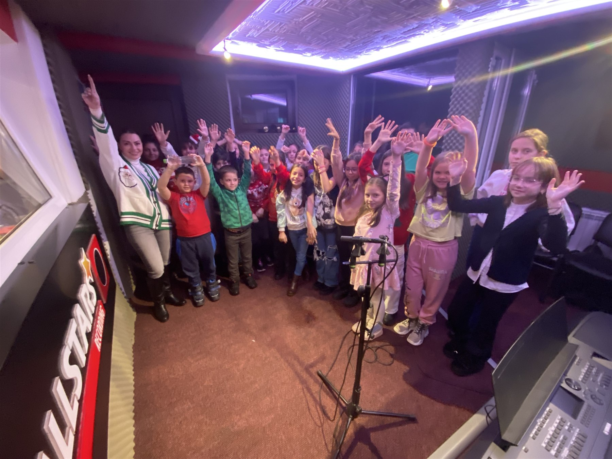

Canto și cor
Lucrăm la respirație, auz și interpretare. Sunt copii foarte talentați care nu au încă încredere să cânte singuri. Cântând în cor, alături de alți copii, își depășesc treptat tracul și capătă curaj.
CURSURI DE MUZICĂ - SUCEAVA & RĂDĂUȚI
Cursuri
Dacă nu știi încă ce instrument să alegi, discutăm la prima întâlnire și îți recomandăm instrumentul potrivit.
Lucrăm la respirație, auz și interpretare. Sunt copii foarte talentați care nu au încă încredere să cânte singuri. Cântând în cor, alături de alți copii, își depășesc treptat tracul și capătă curaj.
La pian sau acordeon, fiecare elev învață pas cu pas, prin exerciții și piese potrivite vârstei și nivelului său.
Pentru un sunet bun, ambușura și respirația se învață împreună. Cu o tehnică corectă de la început, elevul progresează mai ușor și nu ajunge să se descurajeze.
Țambalul are un loc aparte în muzica tradițională românească, dar se predă în puține școli. La Si Mi Song, îl poți învăța de la zero, pas cu pas, cu accent pe tehnica corectă.
CUM ÎNCEPI?
Ne cunoaștem, vorbim despre ce ai vrea să înveți tu sau copilul tău și vedem care ar fi cel mai bun început.
Nu este un examen și nu trebuie să te hotărăști pe loc. La final, pleci cu o recomandare clară.
ELEVII SI MI SONG

CORUL SI MI SONG
La repetiții, copiii învață să asculte celelalte voci, să urmărească dirijorul și să cânte împreună. Corul este deschis și copiilor care nu au mai cântat până acum.
Studio de înregistrări
Poți înregistra voce sau instrument. Stabilim înainte ce vrei să faci și de cât timp ai nevoie, iar în studio primești ajutorul tehnic necesar.
Contact
Alege locația și serviciul care te interesează. Se va deschide WhatsApp cu un mesaj pregătit, pe care îl poți modifica înainte să îl trimiți.